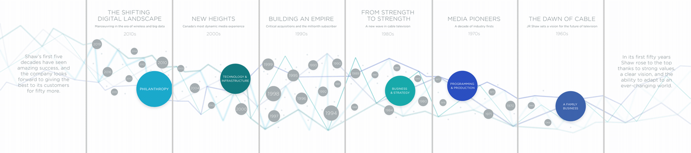
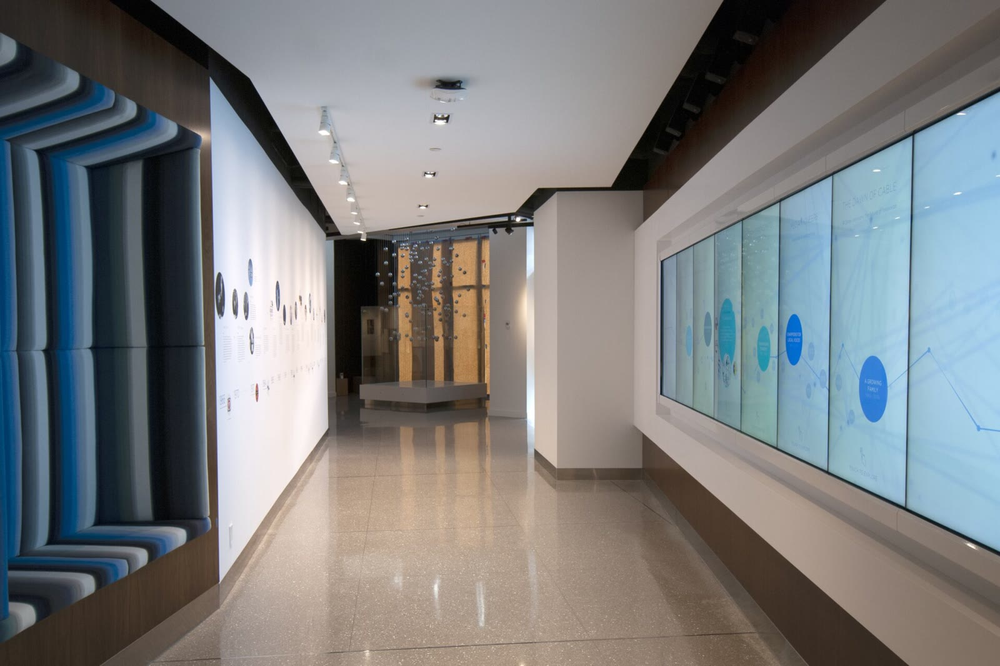
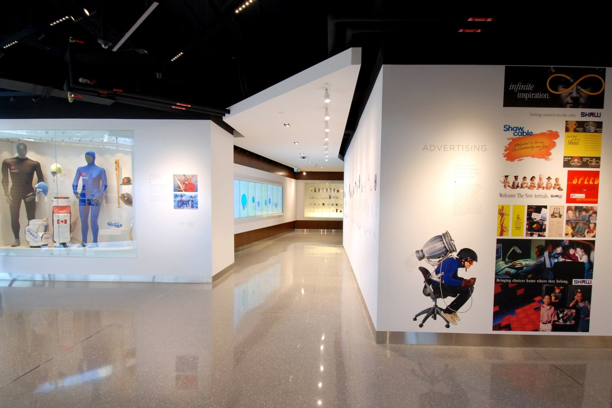
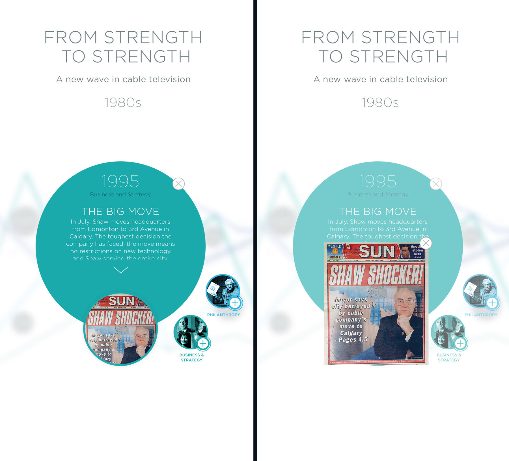
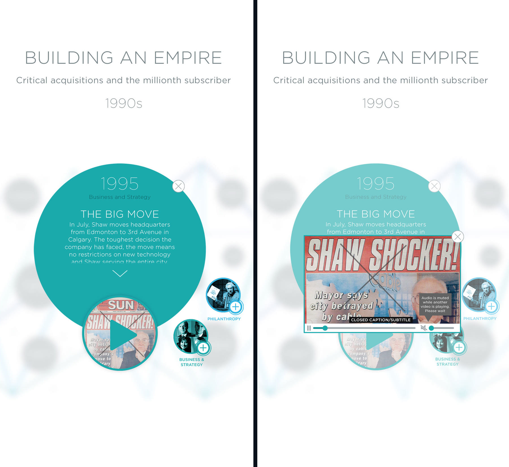
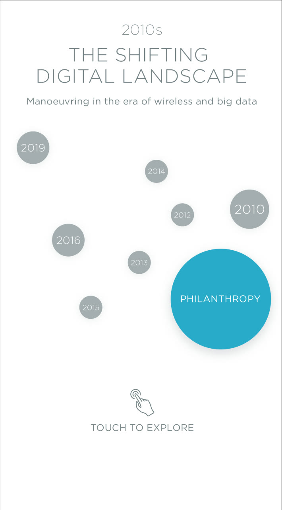
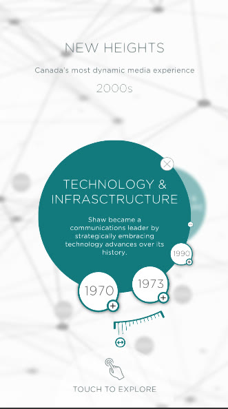
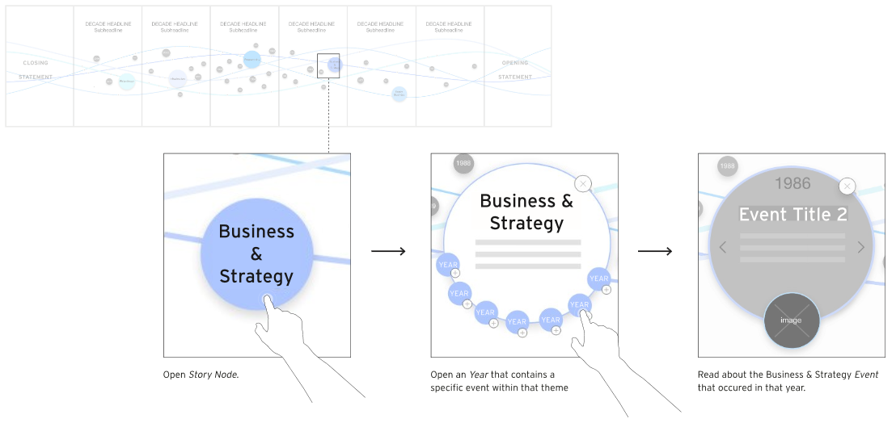
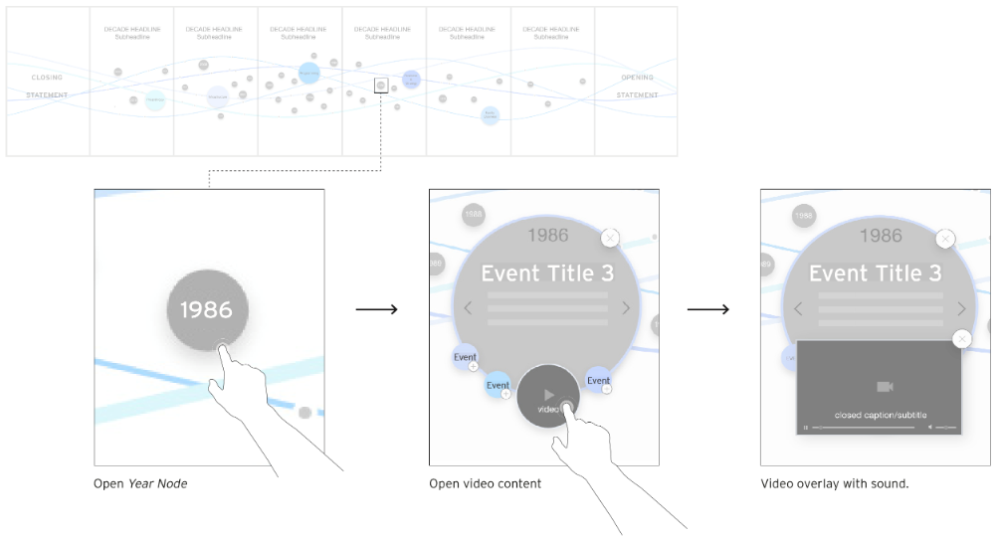

Shaw Family History Centre
NGX Interactive · Installation · 2019

Eight touch monitors aligned into one continuous wall, presenting the Shaw family and company history as an interactive timeline of themed and year nodes that expand on touch.








The wall is eight touch monitors standing side by side as one continuous surface. Visitors browse a timeline of the Shaw family's and company's history, where big theme nodes let them browse every relevant event for a year, and smaller year nodes open a single story with text and either an image or a video. I was handed the UX specs, mockups, and assets, and built the entire real-time experience in Unity.